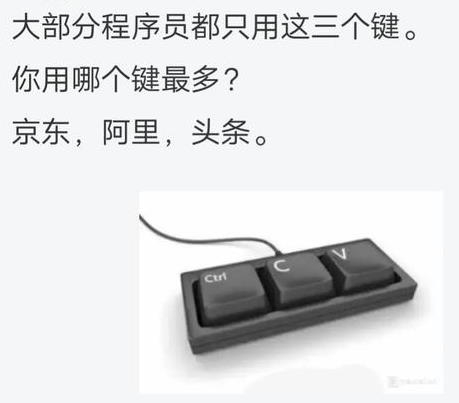

刚发了条豆瓣广播《知名育儿博主与人体实验》，因为看见九省通衢の煎蛋的色目情报掮客开始放风爆料了，顺便把之前零散的线索搜集到一起。
简单说，之前解读过了，要把「知名育儿博主」理解为法人，也就是一个组织，不是市面上洗地用的庸俗化社会新闻当中遍布新浪大地的个把自然人。九点四亿傻哔如果真的把这些文曲星闭门造车添油加醋写的爽文虐文当真，那就等于承认「大字不识一个的农村老太太」「小学文化程度的下岗老头」在周边几十米范围内与街坊邻居就鸡毛蒜皮家长里短发生各种纠纷……于是全球遭瘟了，三洲通衢大打出手了，地震了海啸了洪水了，哎呀神明是存在的哟，只不过灭世的时候船票只有十四万四千张而已。
可能么？
明知道不可能也没意义吖，色目情报掮客把持了话语权嘛。所以，它们丫还嘴硬，我就还能搜集素材。比方说昨天下午家贼又专挑我酗酒的时候去馆子骚扰了，还是老一套，都懒得记录了。按照言必称「摄影棚」的色目文艺爱好者的说法，距离「九五二七」小高潮还有两个月，于是通过「唠唠叨叨瞎鸡巴忙活」就能破关夺隘攻城拔寨的丰功伟绩还有不少，随时记录就是了。
不信是吧？
当年小人物可是「键盘鼠标谈笑间，瑞穗四百亿日元灰飞烟灭」，难道也是假新闻？当年小人物可是「键盘鼠标谈笑间，德国复兴银行三点五亿欧元灰飞烟灭」，难道也是假新闻？最近小人物可是「键盘鼠标谈笑间，哎呀爆仓了」……
小人物改变历史走向的机会多着呢！甭拿饽饽不当点心，甭拿土地爷不当神仙，甭拿键盘常委鼠标战神当韭菜。
出门酗酒之前简单补充几句，之所以还备份了个「灯泡实验吉尼斯世界纪录」，是因为「人体实验」的数据不会出现在公开情报当中，也就是「知名育儿博主」内部档案馆里面才会保存，并且密级极高。正如「纳粹科学家」「七三幺医学家」都从阶下囚摇身一变成为美帝灯塔国座上客那样，这些「世界纪录」的内容，也会原封不断的移交，实验内容也会继续。按照脑壳里只有红白两色液体的肌肉棒子的说法，「纪录就是用来打破的」。
类比「灯泡实验」，可以参考市面上公开发表的键盘常委鼠标战神最热衷的「按键寿命」数据，一定是测试到坏为止是吧？按照根红苗正忠君爱国偏偏还兼任色目混混鸡鸣狗盗之徒的共产主义战士的说法，在那不断革命时期整个新浪大地就在进行一场轰轰烈烈的「社会实验」，测试方法乃「整不死也要往死里整」，就是这样。
而到了改革春风吹满地四十余年之后，市面上的舆论已经被《人民观察家报》之流野生国师把持了，之前解读过了，这帮所谓「工业党」叫嚣「唯生产力论」的本质，就是将「生产者」视同「生产工具」，统一称呼为「革命螺丝钉」。并且还要「发扬集体主义精神」，通俗的比喻就是一帮色目情报掮客嘲笑另外一帮色目情报掮客只会「复制并成功」的时候提供的「只有Ctrl、C、V的三键键盘①」。最少也得三个键吖，单独一个键除了被「制造商」也就是社会新闻当中的「父母」「知名育儿博主」反复敲打至崩溃以搜集数据之外，还能用来干什么呢？
这就是「破坏性测试」，就事论事的说，在所有制造业相关领域都普遍存在，还有概率统计专业的高学历精英专门设计各种抽样调查方式。大手情报工学会社出品的情报工学专用设备，包括但不限于键盘鼠标，总不至于全都用到坏再包装出售吧？肯定有「倒霉催的时代牺牲品」被幕后黑手「拣选」为测试目标，其它「神明所爱的幸运儿」就按照测试数据的均值方差标上参数出厂，面向各行各业「人力资源部门」拍卖去了也。至于「拣选」的标准，按照色目情报掮客自己招供，是鸡巴和/或哔的尊贵程度，或曰「含赵量」。
刚爬起来酒劲还在头昏脑涨，上网乱转发现耍钱的新浪或曰后浪正在奔走相告若干条不肯透露姓名的消息灵通人士提供的色目含量甚高或甚低的重要情报：
于是使用「…♪…大眼珠子高高的飞…♫…呜汪叫连声啊…♬…」模板，替这帮丧家的资本家的乏走狗色目情报掮客补上了出处（或曰「小蝌蚪找爹地」游戏），存档备案：
至于为啥在架空中使用罗刹特色媒体挂名，那还是因为漠北大手情报机构指使的岭南精盎情报掮客在向有关部门临时工举报我的个人博客站点之岗位职责之外，到处放风带节奏实践「撒谎偷窃诈骗」的企业文化。强调过「家贼说话我连标点符号都不信」是严格的结论，提醒读者不要把我这孤苦伶仃可怜废柴草根文盲矬胖老穷光棍汉精神病仆街写手不入流码农数学渣宅男黑客活雷锋烟枪酒鬼缩卵怂货窝囊废与久经考验严格训练的间谍特务卧底混为一谈。
比方说，上面「三键键盘」的情报，参考脚注，就是无一字无来历，并且有实体产品出现。而与此同时活跃在九省通衢の煎蛋的罗刹美术兲才，多年前吹的牛哔直到现在还没有实现②，这是《穷哔与弱哔》当中备份过的内容。当时就是在询问网友时不慎误入充沛着新浪或曰后浪的凡尔赛宫驻京办事处，被键盘常委鼠标战神轻描淡写的「一千五百美元の解决方案」吓住了。多年以后由于码字需要在兲子脚下首善之区「黄脖子绿帽二代论坛」再次询问，发现又误入了充沛着新浪或曰后浪的凡尔赛宫驻京办事处，仍然被键盘常委鼠标战神大肆嘲笑。
未完待续
- ①《仅三个按键 超炫自定义功能键盘上市》
日前，这款三键小键盘已经在日本三家大型商店

进行展示，其正式出货日期为6月19日，
价格为16800日元（1150元人民币）
- ②《1490美元的昂贵键盘配备LED发光按键》
北京时间2007年03月16日，
德国汉诺威CeBIT 2007展会，
虽然这次Art Lebedev Studio没有给我们带来
期待已久的Optimus LED发光键盘，
但这家俄罗斯设计工作室却仍然携带了
巨型模型前来参展。
……
尽管图片非常完美，
但Optimus LED发光键盘却不断经历跳票，
我们希望它能够在今年顺利上市。